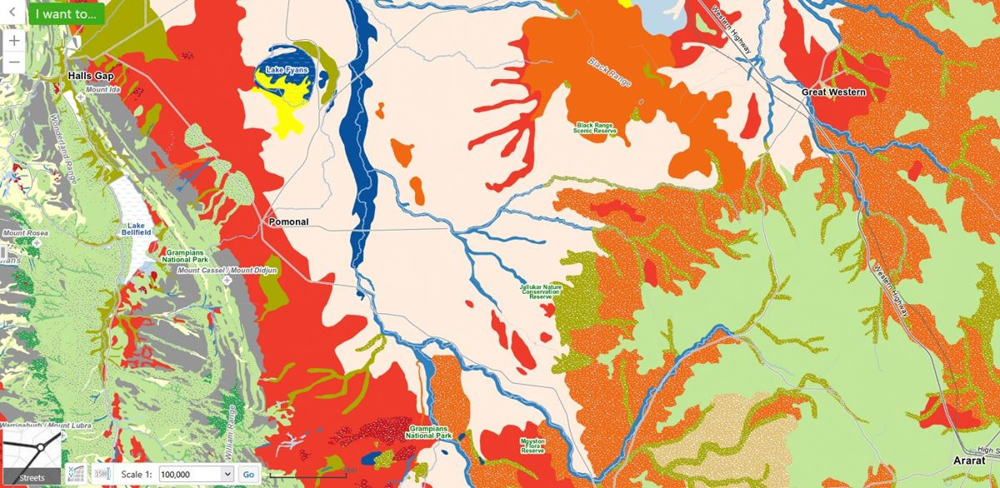
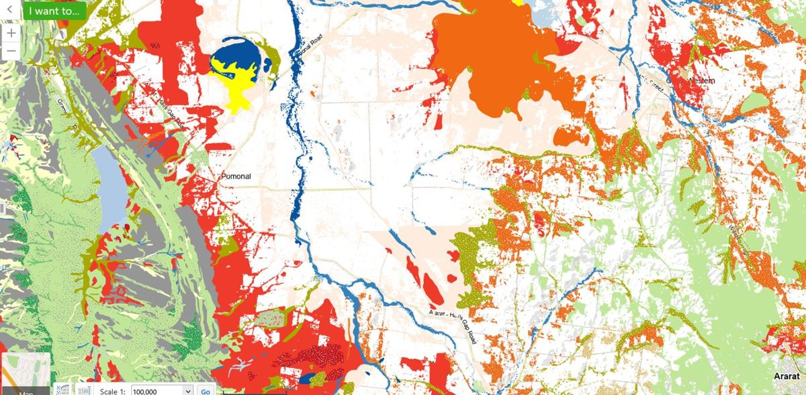
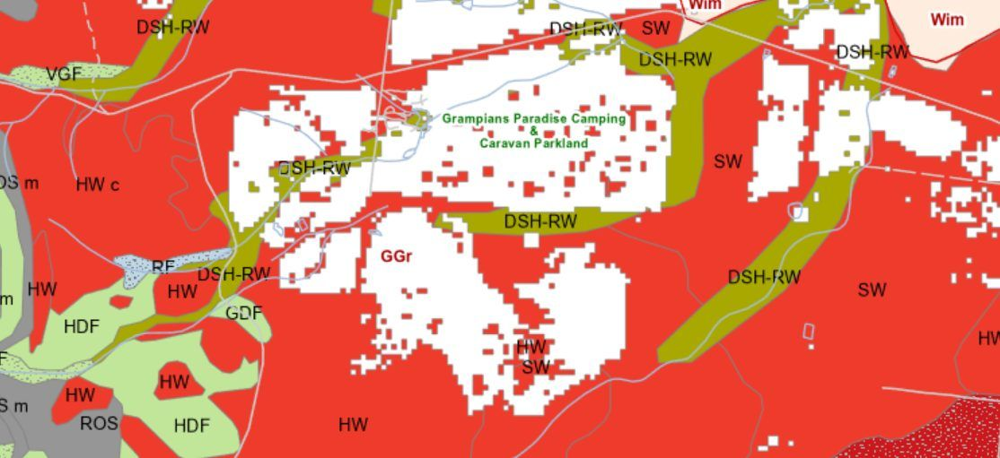

Finding your vegetation type
How often your bush should burn, what should return on its own, and what belongs there if you ever replant all hang off one answer: which vegetation type you have. Your block is already mapped.
In the Wimmera Bushfire Ecology Lookup Tool, section 1.2, Your vegetation type, lists each vegetation type mapped on your block, with its area and conservation status. The switch at the top flips between Today (2005 mapping) and Before 1750. Hover over a row to see where that vegetation sits on the map.
Portal section 1.2 for the example block, on the “Today” view: the summary sentence and the table with Heathy Woodland, Damp Sands Herb-rich Woodland and the unmapped remainder, including the fire division column.
Capture from the lookup tool on the example block near Pomonal (the block it opens on). A second shot of the “Before 1750” view would help too.
Most of the bush on the example block is mapped as Heathy Woodland (EVC 48), about 8 hectares or half the block. Another 3.5 hectares is Damp Sands Herb-rich Woodland (EVC 3), and the remaining quarter or so has no native vegetation mapped: cleared ground, paddock, or patches too small to map. Both vegetation types are listed as Least Concern in this bioregion.
The lookup tool matches Heathy Woodland to the Grassy / Heathy Dry Forest division and Damp Sands Herb-rich Woodland to Forby Forest. Those two divisions are what section 1.4 checks the fire history against. Grassy / Heathy Dry Forest is fire-dependent: much of its regeneration is triggered by fire, and a good deal of what grows there is killed outright and comes back only from seed.
Reading the table
- EVC — the Ecological Vegetation Class, each with a name and number: Heathy Woodland (48), Plains Grassy Woodland (55). This is the level you’ll see everywhere else.
- Conservation status in this bioregion — how much of that vegetation type is left in your bioregion compared with before 1750, from Least Concern through Depleted and Vulnerable to Endangered. The rarer it is, the more your patch counts.
- Fire division — EVCs grouped by how they behave with fire. Around 300 EVCs across Victoria condense into 32 divisions, and the division is what carries the fire intervals in section 1.4.12 The lookup tool fills it in from the state mapping (From state mapping). You can change it, and it is marked Changed by you if you do, but only do that on the advice of your Landcare group or an ecologist.
- Area — hectares of your block, and the share. A row for unmapped ground shows how much of the block carries no mapped native vegetation.
Two maps, two questions
The Today view shows native vegetation still standing, as mapped in 2005. The Before 1750 view models what grew there before European settlement — a better guide to what the site could carry, and the right reference if you replant (section 4.9).2
Both are modelled at a landscape scale and can be wrong on one property. Each EVC has a published benchmark listing the species you would expect; walk your block against it. If it doesn’t match, trust your eyes, and ask your Landcare group or a local ecologist.

Pre-1750 EVCs
Current EVCs
Where this comes from. DEECA’s 2005 and pre-1750 Ecological Vegetation Class mapping, with Bioregional Conservation Status. To look at the source maps yourself, open NatureKit, search your address, and turn on 2005 Ecological Vegetation Classes or Pre-1750 Ecological Vegetation Classes.
Worth stepping through NatureKit once to confirm the layer names in the note above, which come from DEECA documentation rather than the live tool. The lookup tool also tells people to walk their block against the EVC benchmark, so it needs the same correction as the passage below.
This section tells people to walk their block against the EVC benchmark. Yasmin Kelsall advised specifically against using benchmarks for species information, because they are modelled, and pointed instead to the regional EVC reports, where experts did on-ground flora assessments. Those two report titles need to come off her slides, and then this passage and 4.9 both change. Queued.